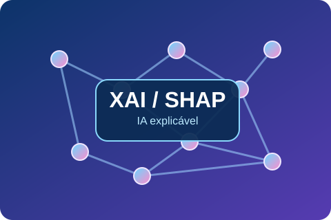

DADOS · FRAUDES
Operação Espelho Falso
Investigação de deepfakes, visão computacional e riscos de fraude.
Ver projetoPORTFÓLIO DE PROJETOS
Dados • Tecnologia • Negócios • Acadêmico • Pessoal
Um portfólio multidisciplinar que reúne projetos acadêmicos, tecnologia, programação, robótica, empreendedorismo e estudos, com documentação, códigos e análises.
Escolha uma categoria para filtrar todos os trabalhos do meu portfólio.
Conheça projetos de diferentes áreas do meu portfólio.
Investigação de deepfakes, visão computacional e riscos de fraude.
Ver projetoEstudo acadêmico de desempenho, indicadores e estratégia bancária.
Ver projetoPortfólio profissional em HTML, CSS e JavaScript, com domínio próprio.
Ver projetoProjeto Coroa Imperial — Black Princess: inovação, embalagem conectada, pesquisa de mercado e estratégia.
Ver projeto ↗
Resenha crítica sobre explicabilidade de modelos preditivos e Teoria dos Jogos Cooperativos.
Ler estudo ↗Acervo completo com projetos profissionais, acadêmicos, tecnológicos e pessoais.
Nenhum projeto corresponde a esta busca. Tente outra categoria.
Os projetos distinguem estudos, protótipos, materiais acadêmicos e entregas documentadas. Informações ainda em desenvolvimento são identificadas.